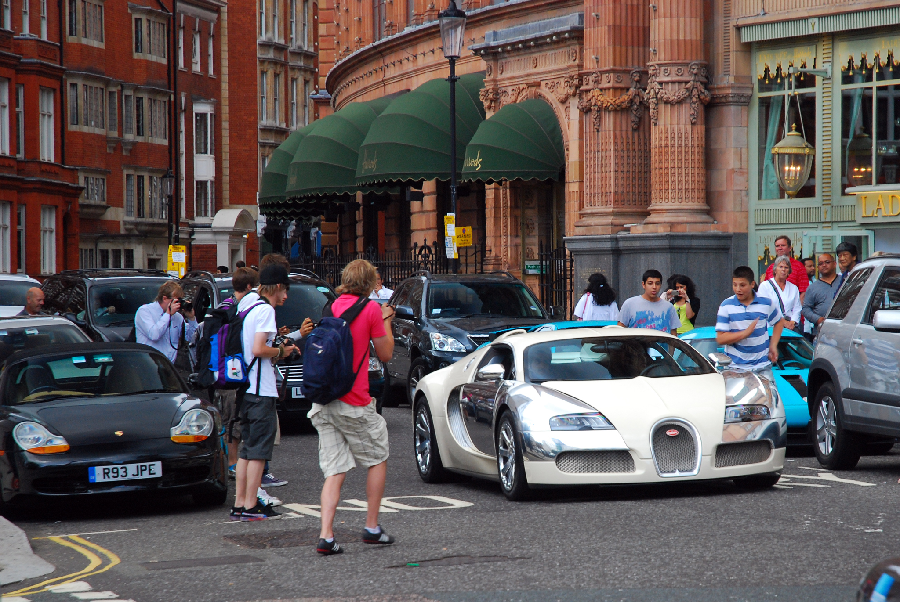
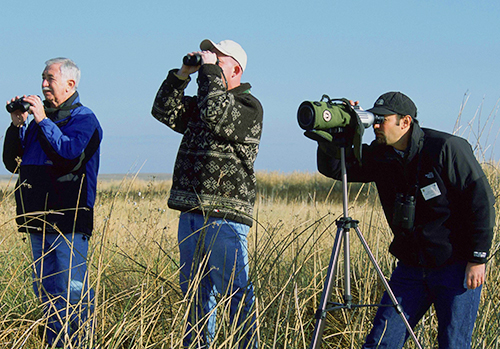

carspotten
Ben jij een echte auto fan? Vind jij het geweldig om naar auto's opzoek te gaan? heb jij snelle ogen? Dan is dit echt wel wat voor jou.
met deze workshop ga je met een professionele auto spotter de straat op om samen en tegen elkaar auto's te zoeken.
Je krijgt vervolgens een kaart met verschillende soorten auto's en merken die je kan afvinken als je ze ziet.
er is ook een nog een zeer lastige opdracht met ketekens en formules waar je ook een redelijke tijd mee bezig bent.
Ook zit er een vel bij voor een wedstrijd wie de meese auto's kan zien,Als je die wint van de pro krijg je er nog een mooie prijs bij.
Deze workshop duurt ongeveer 2-5 uur afhankelijk van eigen keuze onvoorzienbare omstandigheden.
Ook kan je kiezen om naar de auto beurs te gaan met een groepje georganiseerd door ik hou van hobby's(dit kan niet samen met bovestaand )
We raden aan om dichte kleding aan te trekken. Verder word alles voorzien zoals: de opdracht kaarten en de professionele spotter
ook word een lunch verzorgd (mocht u eventuele allergieën hebben laat het dan even weten)

